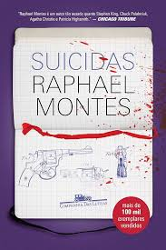
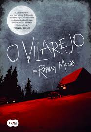
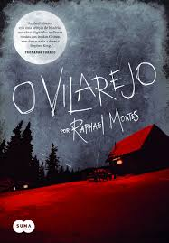

Obras Principais e Reconhecimento

Suicidas (2012 – Benvirá)
Primeiro romance, escrito entre os 16 e 19 anos. Foi finalista dos prêmios Benvirá, São Paulo de Literatura e Biblioteca Nacional (Machado de Assis), recebendo enorme atenção por sua ousadia temática
 Dias Perfeitos (2014 – Companhia das Letras)
Thriller psicológico que ganhou tradução em cerca de 14 a 22 países. É um dos livros mais adaptados e de maior repercussão internacional de Montes

O Vilarejo (2015 – coletânea de contos)
Contém sete histórias interligadas baseadas nos sete pecados capitais; favorita da mãe do autor e esteve entre os mais vendidos na Bienal de SP
Dias Perfeitos (2014 – Companhia das Letras)
Thriller psicológico que ganhou tradução em cerca de 14 a 22 países. É um dos livros mais adaptados e de maior repercussão internacional de Montes

O Vilarejo (2015 – coletânea de contos)
Contém sete histórias interligadas baseadas nos sete pecados capitais; favorita da mãe do autor e esteve entre os mais vendidos na Bienal de SP
 Jantar Secreto (2016)
Thriller perturbador com tema de canibalismo; vendeu mais de 100 mil cópias e consolidou seu estilo chocante e intrigante
Jantar Secreto (2016)
Thriller perturbador com tema de canibalismo; vendeu mais de 100 mil cópias e consolidou seu estilo chocante e intrigante
 Uma Mulher no Escuro (2019)
Vencedor do Prêmio Jabuti (2020). Acompanha temas psicológicos densos e foi elogiado por público e crítica
Uma Mulher no Escuro (2019)
Vencedor do Prêmio Jabuti (2020). Acompanha temas psicológicos densos e foi elogiado por público e crítica
 Uma Família Feliz (2024)
Baseado em roteiro escrito por ele, o romance-experimento foi lançado simultaneamente como filme estrelado por Grazi Massafera e Reynaldo Gianecchini, dirigidos por José Eduardo Belmonte. O livro foi bestseller e o filme teve sessões lotadas nas pré-estreias
Uma Família Feliz (2024)
Baseado em roteiro escrito por ele, o romance-experimento foi lançado simultaneamente como filme estrelado por Grazi Massafera e Reynaldo Gianecchini, dirigidos por José Eduardo Belmonte. O livro foi bestseller e o filme teve sessões lotadas nas pré-estreias
No total, Raphael Montes já lançou oito livros até 2024 e foi o autor brasileiro mais vendido da Companhia das Letras naquele ano, com quase 1 milhão de exemplares distribuídos internacionalmente
Adaptações Audiovisuais e Atuação como Roteirista
 Coautor de Bom Dia, Verônica (2016), sob o pseudônimo Andrea Killmore, junto com Ilana Casoy. A série da Netflix virou fenômeno com três temporadas e venceu o Prêmio APCA de melhor dramaturgia e atuação
Coautor de Bom Dia, Verônica (2016), sob o pseudônimo Andrea Killmore, junto com Ilana Casoy. A série da Netflix virou fenômeno com três temporadas e venceu o Prêmio APCA de melhor dramaturgia e atuação
 Roteirizou os filmes da trilogia sobre o caso Richthofen: A Menina que Matou os Pais, O Menino que Matou meus Pais e A Menina Que Matou os Pais: A Confissão, lançados em plataformas como Prime Video
Roteirizou os filmes da trilogia sobre o caso Richthofen: A Menina que Matou os Pais, O Menino que Matou meus Pais e A Menina Que Matou os Pais: A Confissão, lançados em plataformas como Prime Video
 Em 2024, escreveu e atuou no filme Uma Família Feliz e criou a novela Beleza Fatal, primeira produção original da HBO Max na América Latina, estreada também em 2025
Em 2024, escreveu e atuou no filme Uma Família Feliz e criou a novela Beleza Fatal, primeira produção original da HBO Max na América Latina, estreada também em 2025
Estilo Literário e Temas
Influenciado por autores como Stephen King, Agatha Christie e Rubem Fonseca, Raphael explora o suspense psicológico com reviravoltas impactantes, pessoas complexas e realismo brutal. Seus livros costumam provocar e perturbar o leitor
Em suas palavras: “Gosto de escrever o que quero ler” — refletindo seu desejo de preencher um gap na literatura policial brasileira
Vida Profissional e Influência
Além de escritor, Montes construiu carreira como roteirista, consultor criativo e produtor-executivo. Em 2021, fundou a Casa Montes, produtora que desenvolve seus projetos originais para cinema e streaming
Escrita frequente em veículos como O Globo, colunista literário e apresentador de programa na TV Brasil, além de cursos online sobre escrita criativa
Considerações Finais
Raphael Montes representa uma nova geração de criadores brasileiros: um autor que transita com fluidez entre a literatura e o audiovisual, trazendo narrativas instigantes, densas, repletas de suspense e que dialogam com públicos amplos. Seu trabalho já ultrapassou fronteiras, sendo adaptado em séries e filmes, e ainda tem muito a oferecer no futuro — no cinema, na TV e na literatura.